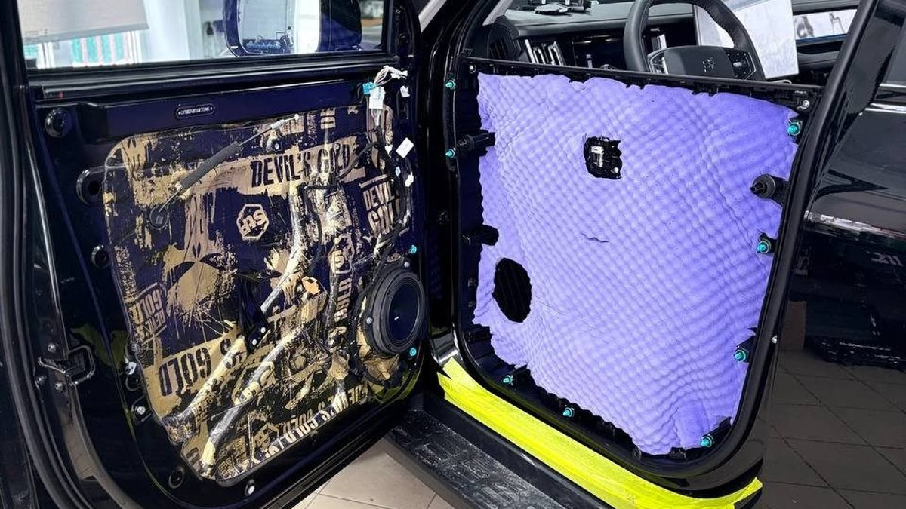

Включите в машине трек с плотным басом и прибавьте громкость. Если на ударном звуке обшивка двери мелко дребезжит, а сам бас звучит так, будто его играют в соседней комнате, вы услышали главное, что умеет и чего не умеет штатная дверь. Теперь закройте дверь снаружи и прислушайтесь к звуку: звонкий жестяной хлопок или глухой и короткий. Это вторая подсказка.
Шумоизоляция дверей автомобиля меняет три вещи: дверь перестаёт звенеть, музыка становится плотнее и чище, шум сбоку приглушается. Но гул пола на трассе, шелест шипов из арок и свист ветра у зеркал от дверей почти не зависят. Почему так, станет ясно из устройства двери, а заодно и то, почему её так часто делают вместе с заменой динамиков.

Как устроена дверь и почему она звенит
Дверь – это два стальных листа с пустотой между ними. Наружный лист вы видите снаружи, он тонкий и большой. Внутренний лист – рама с крупными технологическими отверстиями, через которые на заводе ставят стеклоподъёмник, замок и проводку. Сверху всё закрыто пластиковой обшивкой.
Отсюда три источника шума. Наружный лист вибрирует от дороги и от динамика, как мембрана. Отверстия во внутреннем листе пропускают звук улицы почти без преград. Пластик обшивки на стыках и клипсах дребезжит, особенно на морозе, когда он дубеет.
Почему динамику в двери плохо
Динамик излучает звук двумя сторонами диффузора: вперёд в салон и назад, внутрь двери. Задняя волна идёт в противофазе. Если ей есть куда выйти – через технологические отверстия, щели обшивки, – она встречается с передней и гасит её на низких частотах. Это называют акустическим замыканием, и именно поэтому бас в штатной двери вялый.
Вторая беда – крепление. Штатный динамик часто стоит на пластиковом кронштейне, который на басу сам ходит и гудит. Третья – наружный лист: динамик раскачивает его, и тот звенит в такт музыке.
Шумоизоляция двери решает все три: закрывает отверстия и превращает дверь в закрытый объём, гасит вибрацию металла и даёт динамику жёсткую опору.
Что делают с дверью по шагам
1. Снимают обшивку. Аккуратно, по клипсам, чтобы не сломать крепления и не получить скрипы после сборки.
2. Очищают и обезжиривают металл. На пыльной поверхности материал держится до первых морозов.
3. Наружный лист. Изнутри, через отверстия, клеят вибропоглотитель, особенно напротив динамика. Сплошь весь лист не нужен: главное – середина большой плоской панели.
4. Внутренний лист. Технологические отверстия закрывают жёстким слоем вибропоглотителя, чтобы получить герметичный объём. Доступ к замку и стеклоподъёмнику оставляют через лючки.
5. Обшивка. На неё и на стыки кладут антискрип и шумопоглотитель, клипсы заменяют сломанные.
6. Сборка и проверка. Стекло ходит свободно, замок и ручки работают, обшивка не дребезжит на басу.
Есть правило, которое нельзя нарушать: дренажные отверстия внизу двери остаются открытыми. Вода внутри двери бывает всегда, она стекает по стеклу через уплотнитель. Перекрыли дренаж – получили ржавчину. И ещё: внутри двери не место пене, которая впитывает воду. Зимой с водой туда попадает и солёная слякоть с реагентами, так что мокрый материал внутри двери быстро становится источником коррозии.

Установка динамиков в передние двери: делать ли вместе
Если вы когда-нибудь планируете менять акустику, двери делают вместе с ней. Разборка одна, и новые динамики сразу получают подготовленное место.
Установка динамиков в передние двери правильно идёт через проставку – кольцо из влагостойкого материала, которое крепится к металлу двери и даёт динамику жёсткую опору нужной глубины. Между проставкой и металлом ставят уплотнение, чтобы задняя волна не прорывалась наружу. Спереди проверяют, что диффузор совпадает с решёткой в обшивке и не упирается в неё. Сверху динамик закрывают защитой от воды.
Без подготовки двери новые динамики разочаровывают: бас тонет в том же акустическом замыкании, а наружный лист звенит ещё сильнее, потому что новым динамикам есть чем его раскачать.
Замена штатных динамиков: что выбрать
Штатная акустика во многих машинах – это недорогие широкополосные динамики с бумажным диффузором и небольшим магнитом. Им хватает на радио и навигатор, но на громкости они быстро начинают хрипеть.
Признаки, что динамик пора менять, а не только двери: хрип появляется уже на средней громкости и не уходит, если убрать бас эквалайзером; при лёгком нажатии на диффузор слышно шуршание катушки; бумажный диффузор покоробился или подвес по краю треснул. Бумага в мокрой двери годами впитывает влагу и сохнет на морозе, поэтому к старости машины такое встречается часто.
При замене штатных динамиков есть два пути.
- Коаксиальная акустика. Твитер стоит прямо в центре мидбаса. Ставится на место штатного динамика, проще в монтаже, звучит заметно лучше заводской.
- Компонентная акустика. Мидбас в дверь, отдельный твитер повыше – в стойку, уголок зеркала или торпедо – и кроссовер, который делит частоты. Сцена поднимается к уровню глаз, звук выглядит так, будто музыка играет перед вами, а не у колен.
Размер подбирают под посадочное место конкретной машины, а чувствительность – под источник. Штатная магнитола выдаёт немного мощности, поэтому с ней лучше работают динамики с высокой чувствительностью. Если в планах усилитель, выбор шире.
Шумоизоляция передних дверей или всех четырёх
Шумоизоляция передних дверей – логичный первый шаг: там водитель, там главные динамики, там разница слышна сразу. Задние двери делают, если сзади часто ездят пассажиры, если там стоит акустика или если хочется, чтобы шум сбоку уменьшился по всему салону.
Все четыре двери за раз дают равномерный эффект, но если бюджет ограничен, лучше хорошо сделать две передние, чем наспех четыре.
Как принять работу
После сборки дверь выглядит так же, как до неё, поэтому проверяют по признакам.
- Хлопок. Закройте дверь с обычным усилием. Звук должен стать короче и глуше, без звона листа.
- Простукивание. Постучите костяшкой по наружной панели рядом с ручкой. Вместо пустого жестяного звука – глухой.
- Бас. Включите тот же трек, что и до работы, на той же громкости. Обшивка не дребезжит, бас собраннее и не «плавает» по салону.
- Стекло и замок. Стекло опускается и поднимается с прежней скоростью, без рывков, ручка и кнопка блокировки работают как раньше.
- Фотоотчёт. Попросите снимки каждого слоя: что легло на наружный лист, как закрыты отверстия, где проставка. Это единственный способ увидеть то, что спрятано под обшивкой.
Через пару недель, когда пластик пройдёт несколько холодных утр, послушайте двери ещё раз. Если появился сверчок, его устраняют, сняв обшивку и проклеив проблемный стык.
Чего шумоизоляция дверей не даст
- Тишины на трассе. Гул идёт снизу, через пол, арки и багажник. Двери в нём малая часть.
- Тишины от шипов. Зимой на шипованной резине основной шум из арок. На Московском проспекте или на трассе дверями его не убрать.
- Конца свиста на скорости. Свист даёт уплотнитель, зеркало или стык стекла. Его лечат регулировкой двери и заменой резинок.
- Хорошего звука от плохой магнитолы. Дверь улучшает условия для динамика, но не исправит слабый источник и отсутствие настройки.
Частые вопросы
Шумоизоляция дверей без замены динамиков имеет смысл? Да. Даже штатная акустика в подготовленной двери играет плотнее, уходит дребезг обшивки, а сбоку становится тише. Позже новые динамики встанут на готовое место.
Станет ли дверь тяжелее и не просядет ли она? Дверь прибавит немного веса. При разумном количестве материала петлям и замку это не мешает.
Хлопок двери станет «как у дорогой машины»? Звук станет глуше и короче, без жестяного звона. Это одно из первых, что замечают после работы.
Можно ли сделать шумоизоляцию дверей зимой? Можно, работа идёт в тёплом помещении. Важно, чтобы металл прогрелся и высох до поклейки, иначе материал не схватится.
Сколько стоит шумоизоляция дверей? Цифра зависит от числа дверей, их размера, сложности разборки обшивок на вашей модели, количества слоёв и того, ставятся ли вместе проставки и новые динамики. Поэтому расчёт делают по конкретной машине, а не по прайсу «для всех».
Почему после шумоизоляции появились скрипы? Чаще всего из-за сломанных клипс и непроклеенных стыков обшивки. Их нужно было заменить и проклеить при сборке.
Где сделать шумоизоляцию дверей в Ярославле
Студия «Звук на Волге», Ярославль, проспект Октября, 82б. Пн–пт 8:30–20:00, сб–вс 10:00–19:00. Монтаж идёт вне зоны видимости клиента, поэтому мы делаем фотоотчёт каждого этапа и каждого слоя. Если двери делаете вместе с акустикой, компоненты можно заранее послушать на специальном стенде в студии и выбрать по звуку, а не по коробке.
Подробнее и запись: шумоизоляция дверей в Ярославле. Телефон +7 902 220-75-55, сообщения в ВК: vk.me/avtostil_yaroslavl.
Многие ещё знают нас как «Автостиль». Мы обновились, и раз уж делаем звук в Ярославле, студия теперь называется «Звук на Волге». Адрес и мастера прежние.